Part A
: hand-clicked correspondences, homographies, inverse warping, rectification, mosaics, and a cylindrical projection.
Part B
: automatic stitching with Harris corners + ANMS, feature descriptors, matching, RANSAC, and panorama recognition.
I shot three sets that overlap, plus two flat rectangular objects for rectification. All photos were taken handheld with a phone, so the camera center moved a little between shots (more on that later).
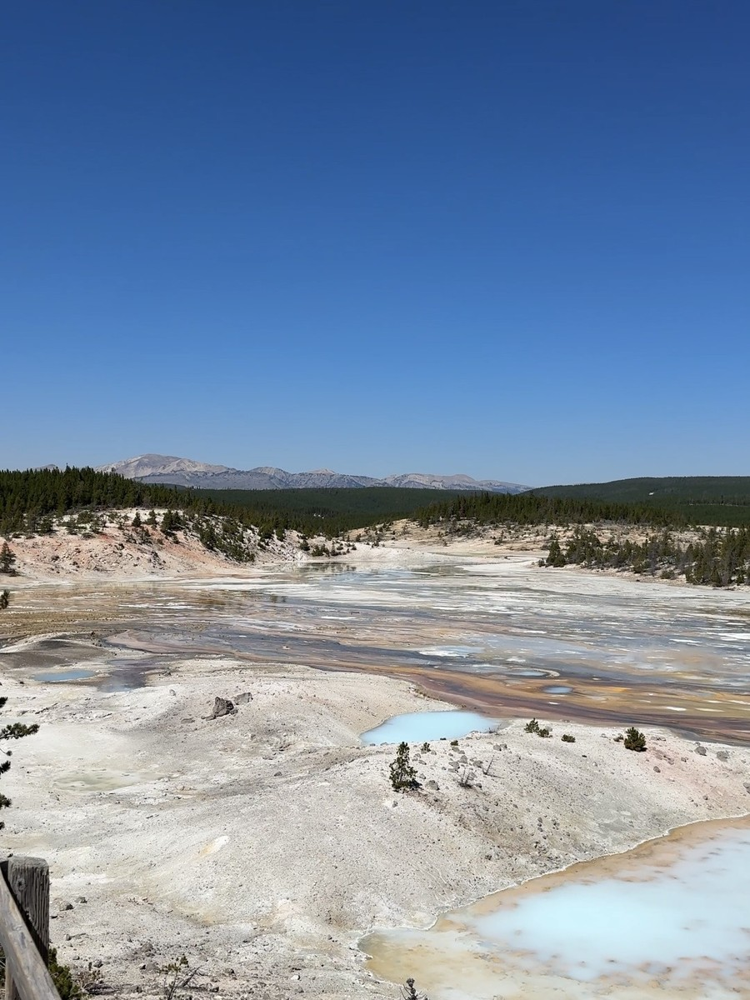
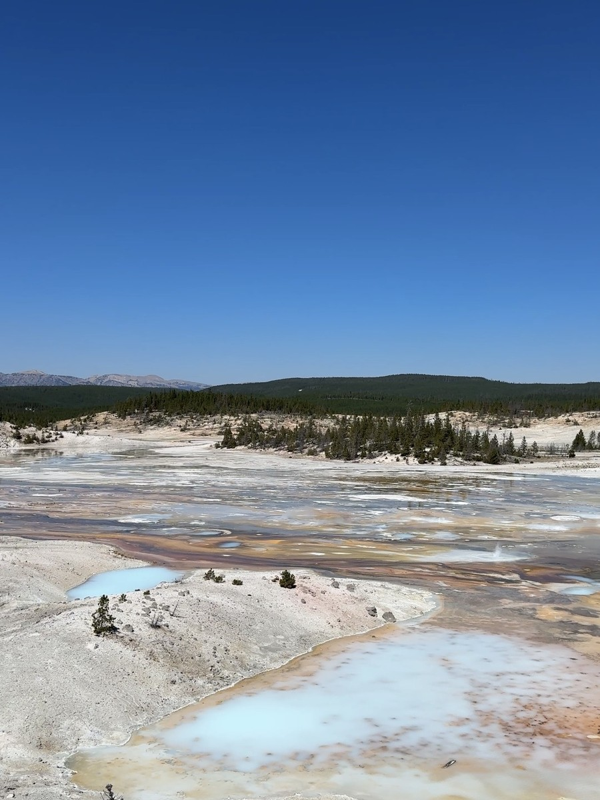
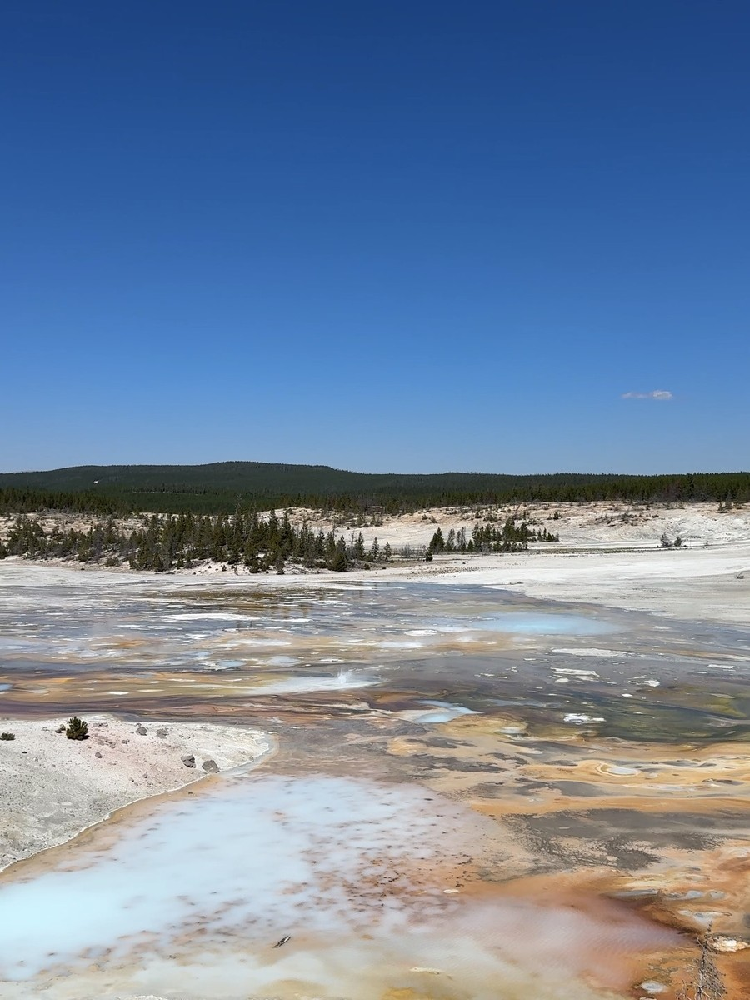
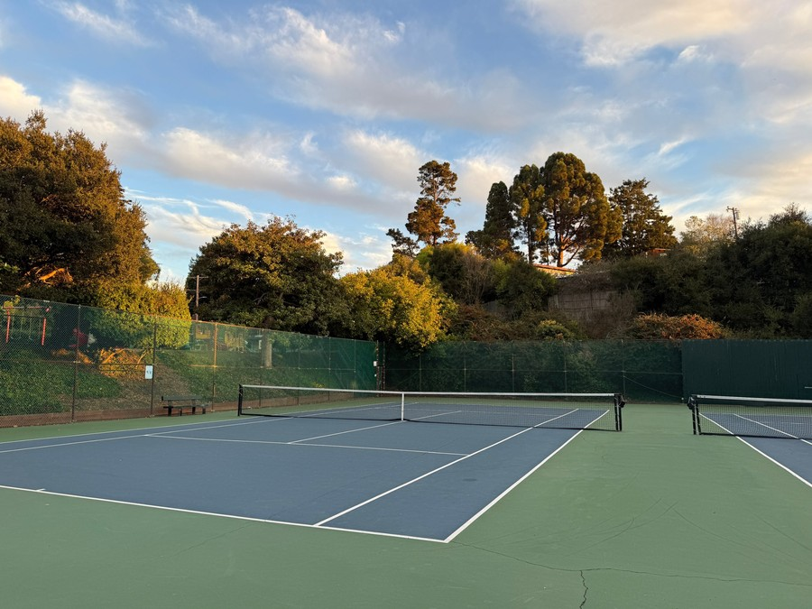
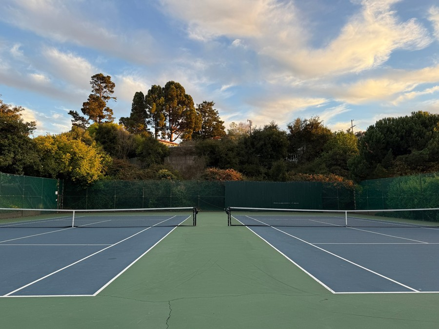
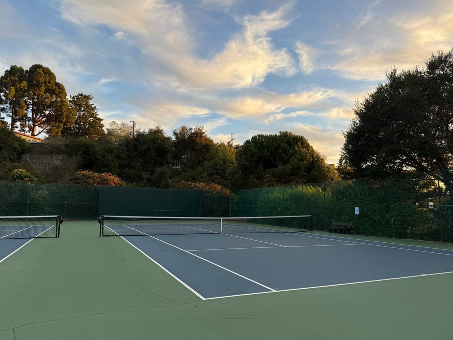
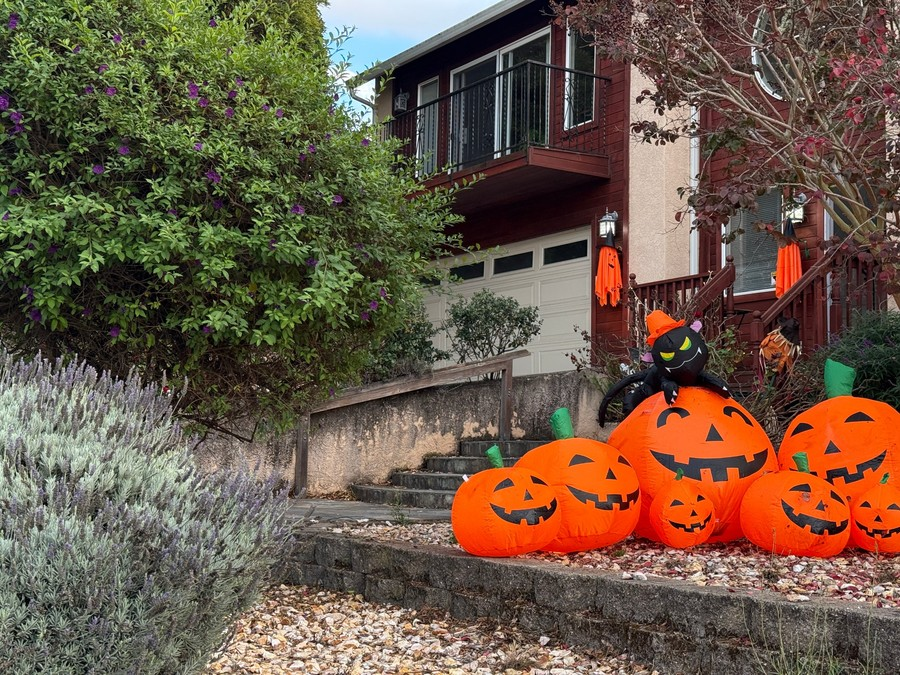
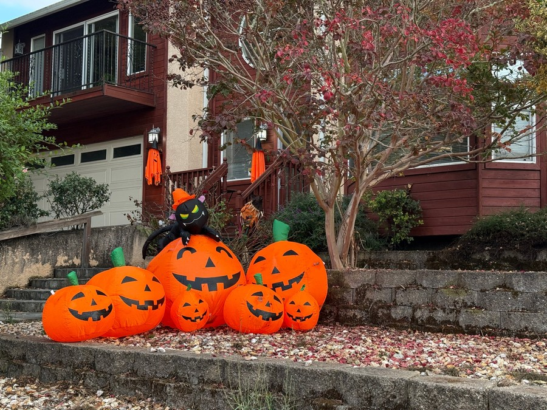
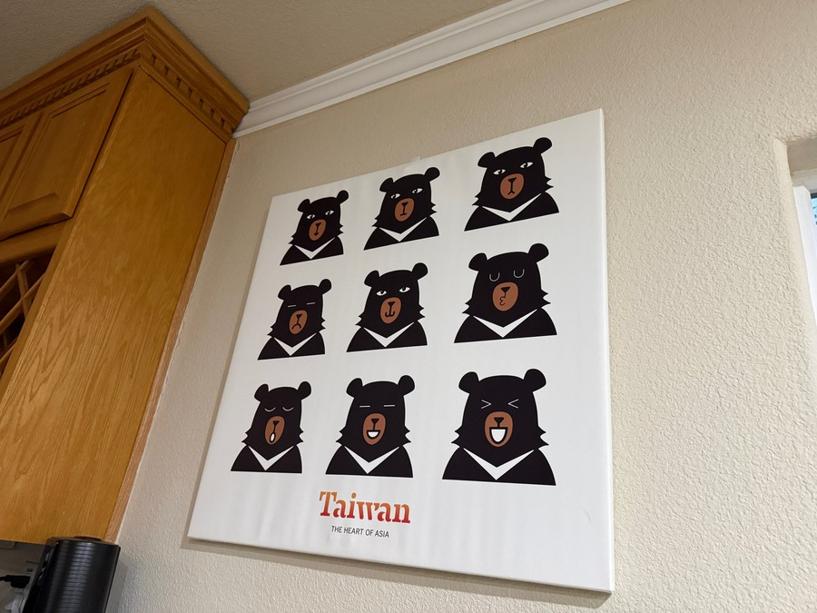
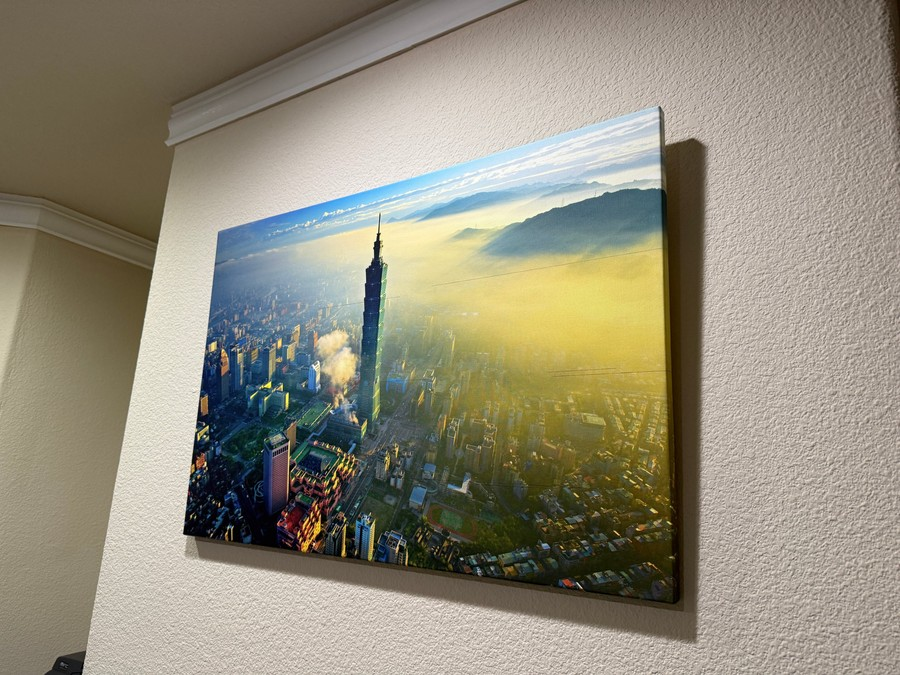
A homography H maps a point (x, y) in one image to (x′, y′) in the other, with 8 degrees of freedom (the bottom-right entry is fixed to 1).
For one correspondence, x′ = (h₁x + h₂y + h₃) / (h₇x + h₈y + 1) and y′ = (h₄x + h₅y + h₆) / (h₇x + h₈y + 1). Multiplying out the denominator gives two equations that are linear in h₁…h₈:
h₁x + h₂y + h₃ − h₇·x·x′ − h₈·y·x′ = x′
h₄x + h₅y + h₆ − h₇·x·y′ − h₈·y·y′ = y′
Each pair of points adds 2 rows to A (2n × 8) and 2 entries to b (2n). With exactly 4 pairs the system has a single solution. With more pairs it is over-determined, so I solve it with least squares (
np.linalg.lstsq
), which spreads small clicking errors over all the points instead of letting one bad point decide everything.
def build_system(im1_pts, im2_pts):
A, b = [], []
for (x, y), (xp, yp) in zip(im1_pts, im2_pts):
A.append([x, y, 1, 0, 0, 0, -x * xp, -y * xp]); b.append(xp)
A.append([0, 0, 0, x, y, 1, -x * yp, -y * yp]); b.append(yp)
return np.array(A), np.array(b)
def computeH(im1_pts, im2_pts):
A, b = build_system(im1_pts, im2_pts)
h, *_ = np.linalg.lstsq(A, b, rcond=None)
return np.append(h, 1.0).reshape(3, 3)The four clicked corners (TL, TR, BR, BL) of the poster, mapped to the corners of an 800×800 square. Here n = 4, so the 8×8 system is solved exactly and the reprojection error is 0 px.
A (8x8):
[[ 400.433 292.438 1. 0. 0. 0. -0. -0. ]
[ 0. 0. 0. 400.433 292.438 1. -0. -0. ]
[ 883.307 159.484 1. 0. 0. 0. -705762.148 -127427.529]
[ 0. 0. 0. 883.307 159.484 1. -0. -0. ]
[ 897.187 868.818 1. 0. 0. 0. -716852.164 -694185.727]
[ 0. 0. 0. 897.187 868.818 1. -716852.164 -694185.727]
[ 275.515 787.731 1. 0. 0. 0. -0. -0. ]
[ 0. 0. 0. 275.515 787.731 1. -220136.174 -629396.685]]
b = [0, 0, 799, 0, 799, 799, 0, 799]
H = [[ 6.956 1.754 -3298.27 ]
[ 1.724 6.263 -2521.986]
[ 0.003 0.002 1. ]]Same idea, but the target is a 900×600 rectangle because the canvas is 3:2.
b = [0, 0, 899, 0, 899, 599, 0, 599]
H = [[ 4.847 0.575 -1595.46 ]
[ 0.914 3.192 -1258.825]
[ 0.002 0.001 1. ]]
mean reprojection error: 0.000 pxFor every neighboring pair I clicked 10 point pairs by hand, only inside the overlap and spread over the whole overlap region (not all in one corner, otherwise H gets bad far away from the points). I chose corners or small distinctive things (a small tree, a rock, a net post, a window corner) and avoided things that move: clouds, steam, water ripples, and tree leaves in the wind. The reference image is the middle one for the 3-photo sets, so every other image is warped directly into its frame.
Ten point pairs per neighboring pair (20 equations, 8 unknowns, solved by least squares). The mean reprojection error is the average distance in pixels between H applied to my clicked point and the point I clicked in the reference image. The images are resized so the longest side is 1200 px, and the coordinates below are in that resized frame.
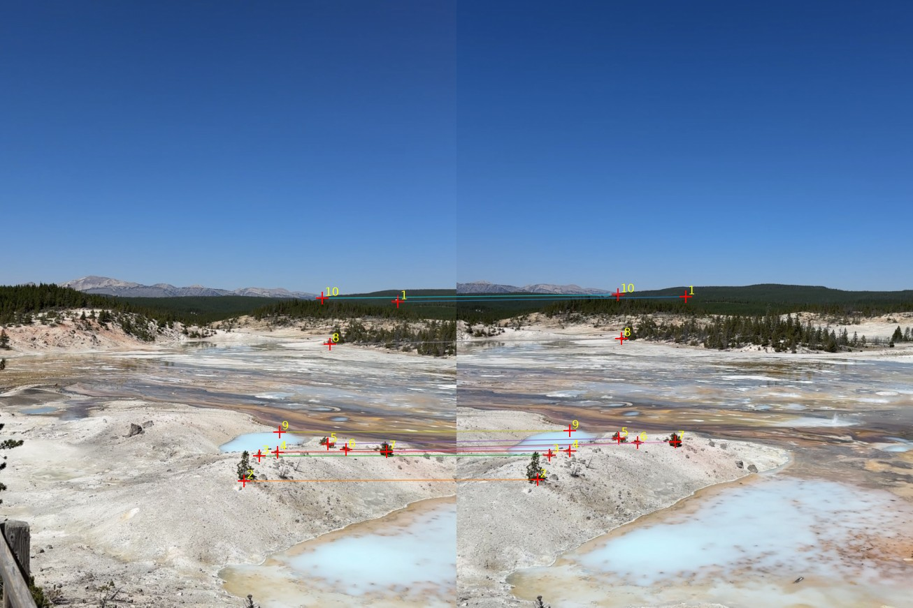
H (left -> middle) =
[[ 0.874 -0.063 -225.118]
[-0.03 0.784 101.486]
[ 0. -0. 1. ]]
mean reprojection error: 3.13 px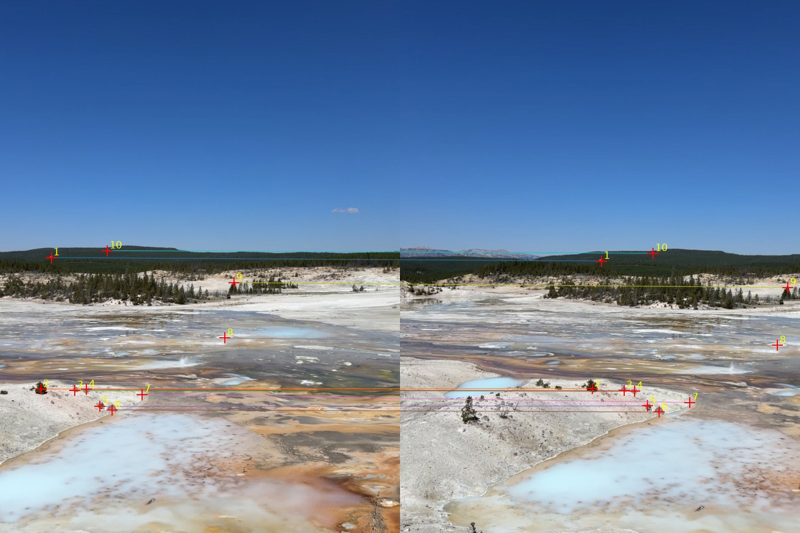
H (right -> middle) =
[[ 0.757 -0.006 349.74 ]
[-0.154 0.906 56.116]
[-0. -0. 1. ]]
mean reprojection error: 2.69 px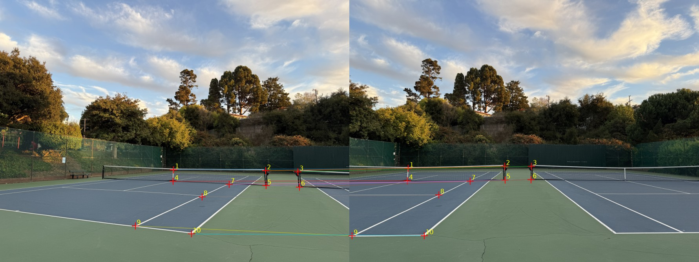
H (left -> middle) =
[[ 1.856 -0.155 -731.294]
[ 0.392 1.432 -262.819]
[ 0.001 -0. 1. ]]
mean reprojection error: 2.06 px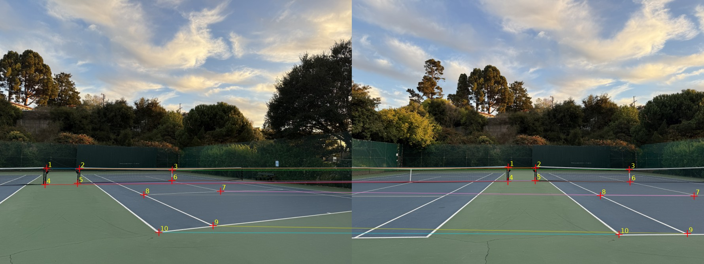
H (right -> middle) =
[[ 0.523 0.021 391.897]
[-0.208 0.756 119.79 ]
[-0. -0. 1. ]]
mean reprojection error: 1.81 px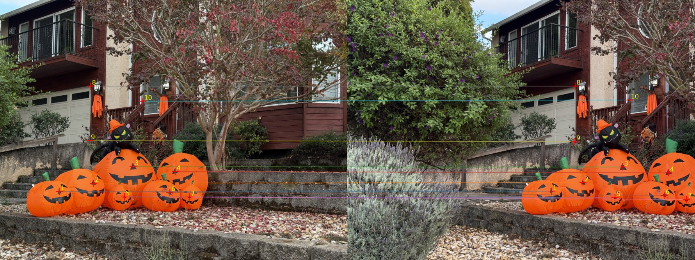
H (right -> left) =
[[ 0.768 0.1 471.294]
[-0.121 0.975 31.281]
[-0. 0. 1. ]]
mean reprojection error: 2.37 pxThe mean reprojection error is about 2–3 px for all five pairs. This is a mix of my clicking error and the fact that a homography is not exact for scenes with depth. The Yellowstone left-to-middle pair has the largest error (3.1 px), probably because many of my points are on the small terrace in the lower part of the photo, so the far part of the picture is less constrained. In the tennis pairs the net posts, line intersections, and court corners were easy to click accurately, and that pair has the smallest error (1.8 px). The H for the tennis left photo has a large scale factor (1.86 in x), which explains why the left image gets so stretched in the planar mosaic.
I use inverse warping : for every pixel of the output, I look up where it came from in the source with H⁻¹ and sample there. This avoids the holes you get from forward warping.
def corner_bounds(shape, H): # output canvas = bounding box of the warped corners
h, w = shape[:2]
c = np.array([[0,0,1],[w-1,0,1],[w-1,h-1,1],[0,h-1,1]], float).T
p = H @ c; p = p[:2] / p[2]
return int(np.floor(p[0].min())), int(np.floor(p[1].min())), int(np.ceil(p[0].max())), int(np.ceil(p[1].max()))
def _source_coords(H, bounds): # for every output pixel, where is it in the source?
x0, y0, x1, y1 = bounds
xs, ys = np.meshgrid(np.arange(x0, x1 + 1), np.arange(y0, y1 + 1))
Q = np.linalg.inv(H) @ np.stack([xs.ravel(), ys.ravel(), np.ones(xs.size)])
return (Q[0] / Q[2]).reshape(xs.shape), (Q[1] / Q[2]).reshape(xs.shape)Nearest neighbor rounds the source coordinate (u, v) to the closest pixel. It is very simple and fast, but edges look jagged (stair steps). Bilinear takes the 4 neighboring pixels and mixes them with weights (1−a)(1−b), a(1−b), (1−a)b, ab, where a and b are the fractional parts of u and v. It is a little slower but the edges are smooth. Pixels whose source coordinate falls outside the image are marked invalid and become transparent (alpha = 0), which I need later for blending.
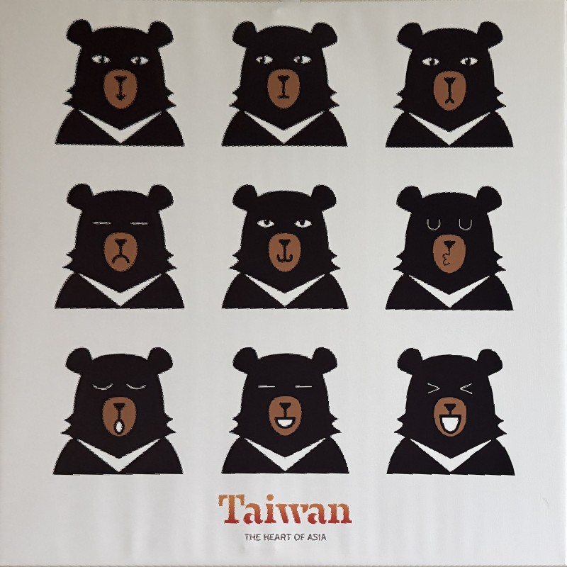
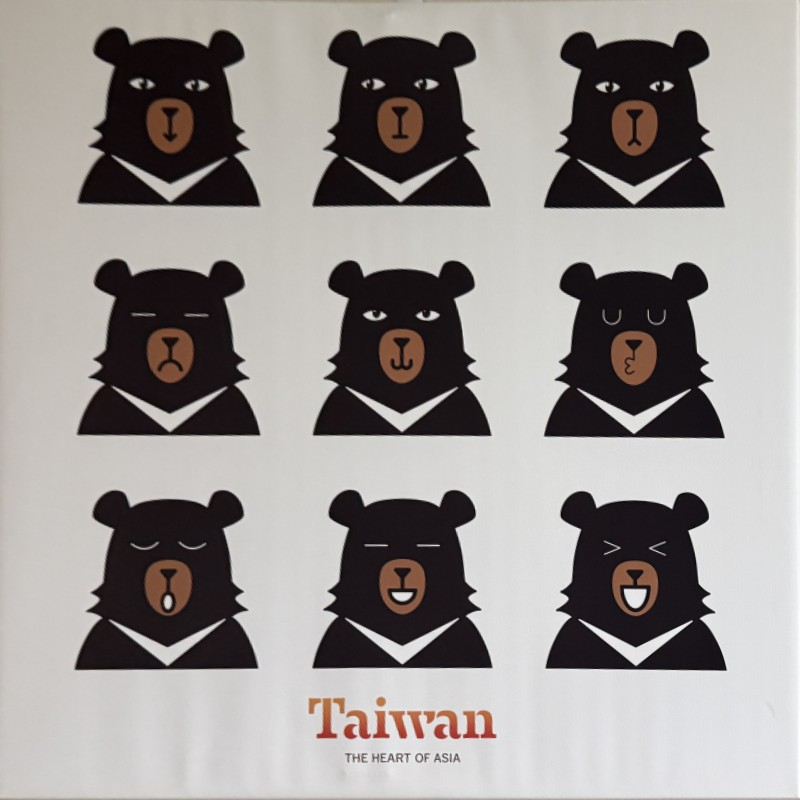
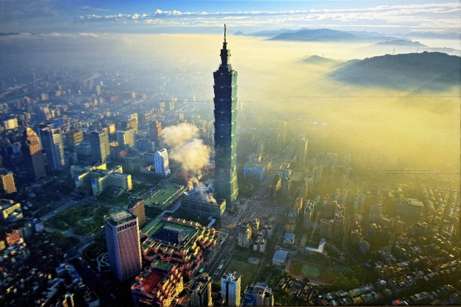
In both examples the canvas edges become straight and perpendicular, the 3×3 grid of bears lines up in straight rows and columns, and the text “Taiwan” is no longer slanted. This is a good sanity check for my homography because I know the object really is a rectangle. Comparing the two interpolations, nearest neighbor shows jagged edges around the bears and the letters (and the fine texture looks noisier), while bilinear is smoother. The canvas also has a small amount of lens distortion, so the picture is not perfectly straight at the very edges.
I warp every image into the middle (reference) image’s frame with its H, make a big canvas that fits all of them, and blend where they overlap. I tried two methods: feathering and a two-band (Laplacian-style) blend .
Feathering: every image gets a weight equal to the distance to its nearest border (so it is 0 at the edge and large in the middle), warped together with the image. The mosaic is the weighted average Σwᵢ·Iᵢ / Σwᵢ. It hides the exposure seam but averages misaligned things, so small misalignments show up as ghosts.
Two-band: I split each warped image into a low-frequency band (Gaussian blur, σ = 15) and a high-frequency band (image minus low). The low band is blended with the soft weights above (smooth transition over a long distance), and the high band is taken from the image with the larger weight at each pixel (hard transition, so details do not get averaged into ghosts). Then I add the two bands back.
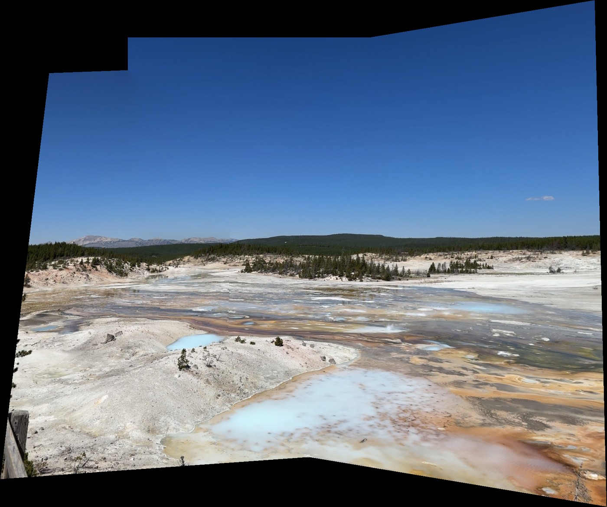
This is my favorite result: the white terraces, the colored water channels and the tree line all connect well. In the feathered version you can see a faint double mountain ridge in the distance (the far mountains are not on the same plane as the ground, and my hands moved a bit). The two-band version has sharper details, but there is a faint vertical line in the middle where the exposure changes slightly between photos. The steam and the water surface also moved between shots, so those small areas never match perfectly.
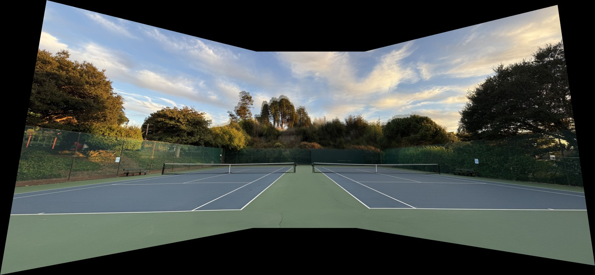
The court lines and the fences connect well. The shape of the mosaic looks like a bow-tie because the left and right photos are strongly stretched by H (the left-to-middle H stretches x by a factor of about 1.9). That is the normal behavior of a planar projective mosaic when the field of view gets wide. The feathered version has ghosted trees in the center top (the trees are far away and the leaves moved, and my camera center also moved, causing parallax). The two-band blend fixes most of this. The leftover seam in the sky is from slightly different exposure.
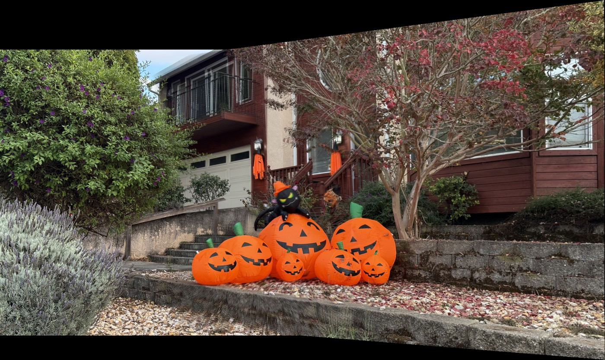
Only two photos here. The pumpkins, stairs and garage line up nicely. The feathered version has a slight double image of the balcony railing at the top left, since the balcony is farther from me than the stairs, so a single homography cannot match both depths perfectly. The two-band version is cleaner at that spot.
A homography is exactly right only for (1) a pure camera rotation or (2) a planar scene. My photos are never a perfect rotation (I am holding a phone in my hands), so objects at very different depths show small errors. It is also very sensitive to point quality: moving one clicked point by a few pixels visibly changes the far end of the mosaic.
A planar mosaic gets stretched a lot at the edges (see the bow-tie tennis result). With a cylindrical projection, every photo is first re-projected onto a cylinder around the camera. After that, a camera pan turns into a simple 2D shift, so I only need a small rigid alignment instead of a full homography.
With focal length f (in pixels) and the image center (x_c, y_c), the cylinder coordinates are θ = atan((x − x_c)/f) and h = (y − y_c)/√((x − x_c)² + f²). In the output image, x′ = f·θ + x_c and y′ = f·h + y_c. I implement it as an inverse warp: for each output pixel, x = f·tan(θ) + x_c and y = f·h/cos(θ) + y_c, and then I sample the source with bilinear interpolation.
I do not know f, I let the program choose it: it maps my clicked correspondences onto the cylinder for many values of f and keeps the f for which “cylinder + rotation + translation” fits the points best (the smallest residual).
def cylindrical_warp(im, f):
h, w = im.shape[:2]
xc, yc = (w - 1) / 2, (h - 1) / 2
out_w = int(2 * f * np.arctan(xc / f)) + 1
xs, ys = np.meshgrid(np.arange(out_w), np.arange(h))
theta = (xs - (out_w - 1) / 2) / f
hh = (ys - yc) / f
u = f * np.tan(theta) + xc # inverse mapping: cylinder pixel -> source pixel
v = f * hh / np.cos(theta) + yc
out, valid = sample_bilinear(im, u, v)
return out, valid.astype(np.float64)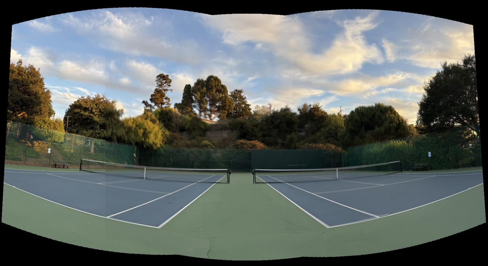
The court lines are no longer stretched into a bow-tie, and the two courts keep a similar size across the picture. The first time I did this I used only a translation and got double nets and dark gray wedges at the top and bottom. There were two causes. First, the empty corners that the cylinder leaves behind were counted as real pixels when blending, so I now give them weight 0. Second, my phone was rolled slightly between shots, which a pure translation cannot fix, so I added a small rotation (a least-squares rigid fit, Procrustes). In my tests this brought the average alignment error of the clicked points down from about 9 px to about 2 px. The feathered version still blurs the distant trees a little (they move in the wind), and the two-band version is sharper. In the two-band picture you can see a small break in the net, where the left and right photos meet.
I wrote a single-scale Harris detector from scratch. The photos are resized so the longest side is 1200 px.
I blur the gray image (σ = 1), take Sobel derivatives Ix and Iy, and smooth the products Ix², Iy², IxIy with a Gaussian (σ = 1.5) to get the matrix M at each pixel. I use the harmonic mean of the eigenvalues, f = det(M) / trace(M), which is what Brown et al. use. Then I keep local maxima in a 5×5 neighborhood with f above 1% of the maximum, and I throw away corners within 20 px of the border (I need a 40×40 window around each corner later).
ANMS (Adaptive Non-Maximal Suppression). Plain Harris corners bunch up in textured areas (the trees), so most of the corners come from one place. For every corner i, I compute a suppression radius rᵢ = the distance to the nearest corner j that is clearly stronger (fᵢ < 0.9·fⱼ). Then I keep the 500 corners with the biggest radius. The result is strong corners that are also spread over the whole image. The strongest corner has radius ∞, so it is always kept. For speed I only run ANMS on the 6000 strongest candidates.
def anms(xs, ys, strength, n_keep=500, c_robust=0.9, max_candidates=6000):
order = np.argsort(-strength)[:max_candidates]
xs, ys, s = xs[order], ys[order], strength[order]
pts = np.stack([xs, ys], axis=1).astype(np.float64)
r = np.full(len(s), np.inf)
for a in range(0, len(s), 1000):
d = cdist(pts[a:a+1000], pts, "sqeuclidean")
stronger = s[a:a+1000, None] < c_robust * s[None, :] # only clearly stronger corners can suppress i
d[~stronger] = np.inf
r[a:a+1000] = d.min(axis=1)
keep = np.argsort(-r)[:n_keep]
return xs[keep], ys[keep], r[keep]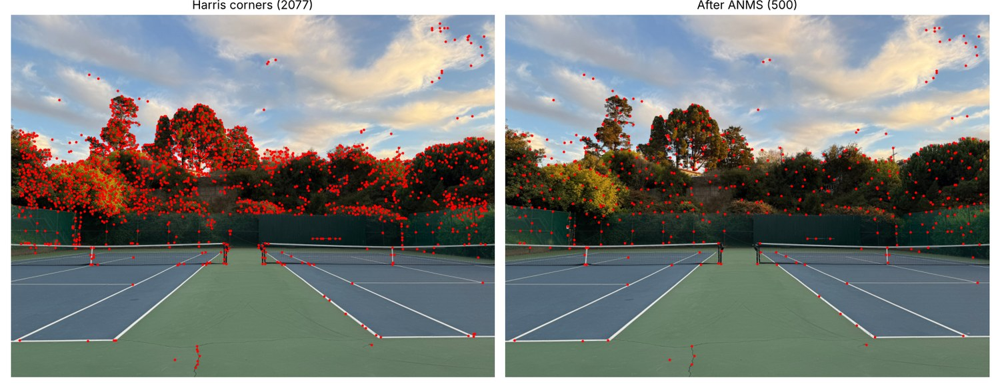
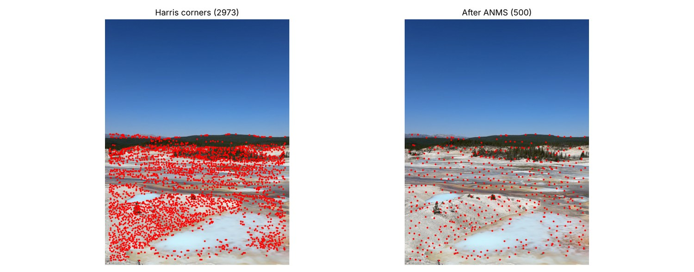
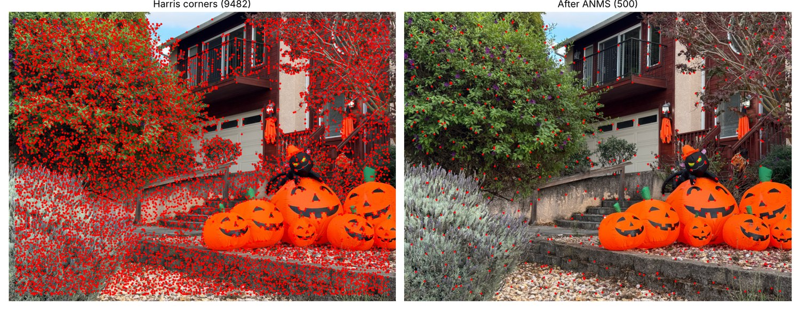
Without ANMS the corners pile up on the trees, the bushes and the leaves, and the court itself only gets corners at the line intersections. With ANMS the 500 corners are spread over the whole picture: court line intersections, net posts, the edge of the fence and the trees along the horizon. The pumpkin photo has 9482 raw corners because of all the leaves and gravel, so ANMS makes a big difference there. A few corners also land on the clouds; those are weak and they never get matched, so they are harmless.
For every kept corner I take a 40×40 window, blur it, and sample an 8×8 patch from it (every 5th pixel). I do not use rotation invariance here.
I first blur the whole gray image with a Gaussian (σ = 2), then sample the 8×8 grid with spacing 5 pixels from the 40×40 window (bilinear interpolation). Sampling from a big window gives a blurry, low-frequency descriptor, so small shifts of the corner (no sub-pixel accuracy) and small misalignments do not change it much. Finally I bias/gain-normalize: subtract the mean and divide by the standard deviation, so the descriptor does not care about brightness or contrast changes between the photos.
def extract_descriptors(im, xs, ys, window=40, size=8, blur_sigma=2.0):
g = ndi.gaussian_filter(to_gray(im), blur_sigma)
step = window // size # 5 pixels between samples
offs = (np.arange(size) - size / 2 + 0.5) * step
descs = []
for x, y in zip(xs, ys):
gx, gy = np.meshgrid(x + offs, y + offs)
patch = ndi.map_coordinates(g, [gy, gx], order=1, mode="nearest")
descs.append(((patch - patch.mean()) / (patch.std() + 1e-8)).ravel()) # bias/gain normalization
return np.array(descs)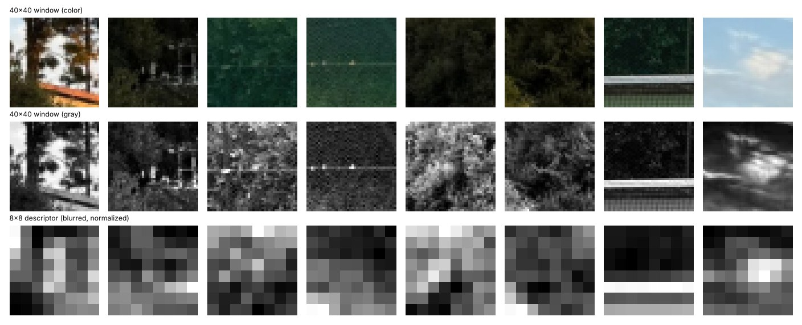
The 8×8 descriptor is a very blurry version of the 40×40 window, but it keeps the big structure: for the fence/net corner (second from the right) the bright horizontal band shows up as a clear light/dark split, and the cloud in the last column becomes one bright blob. Descriptors from the textured bushes look like noise, which is why those are harder to match. Because of the normalization, a bright patch and a dark patch with the same structure end up with the same descriptor.
For each descriptor in image 1 I find its two nearest neighbors in image 2 (by squared difference, SSD) and use Lowe’s ratio test.
A match is accepted only if d₁ / d₂ < 0.6, where d₁ and d₂ are the distances to the first and second nearest neighbors. If the best match is much closer than the second best, it is probably a true match. If both are about equally far, the descriptor is ambiguous (fence and leaves look the same everywhere) and I throw it away. I used 0.6 as a compromise: it gives enough matches for RANSAC and still keeps most of the wrong ones out.
Green lines are the matches that RANSAC keeps (inliers), red lines are the matches that RANSAC throws away (outliers). The next section explains how RANSAC picks them.
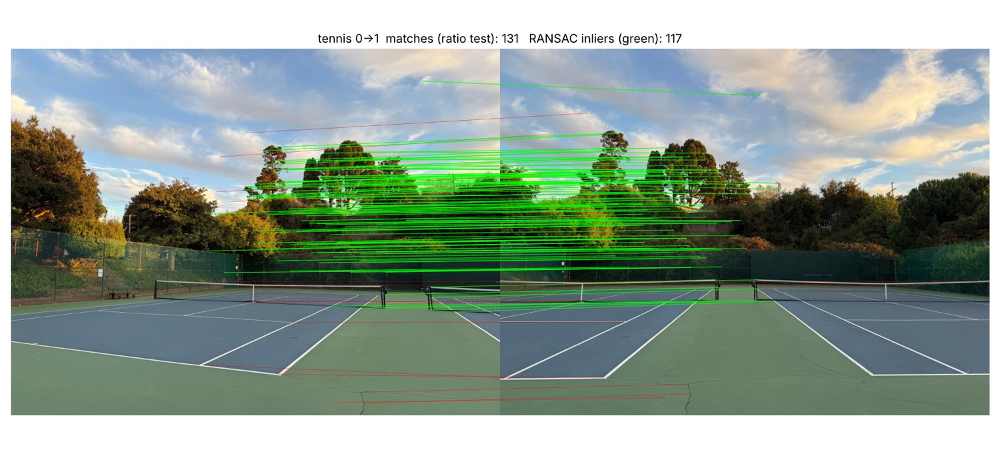
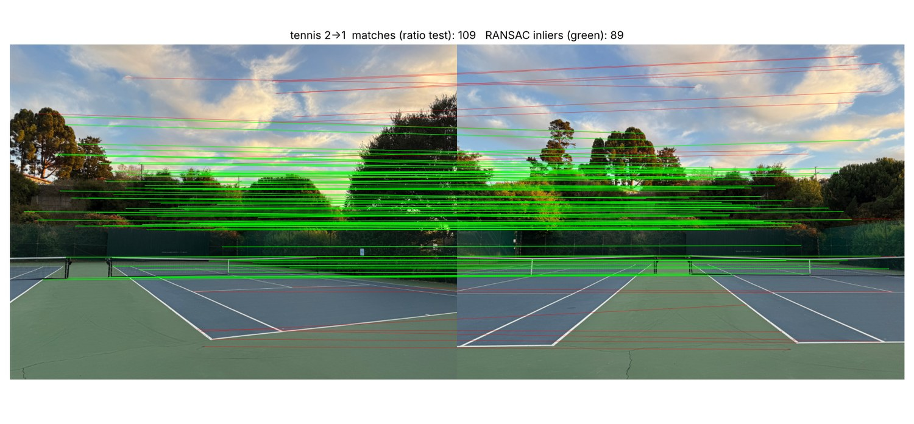
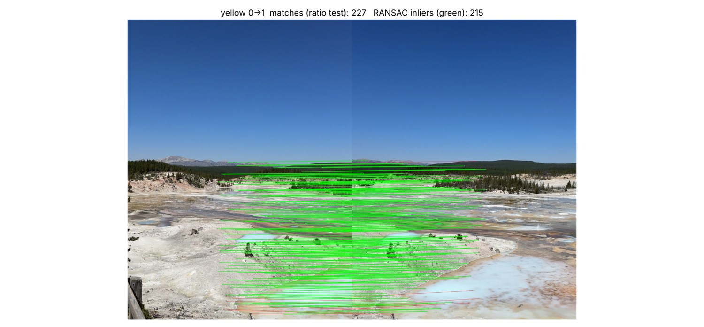
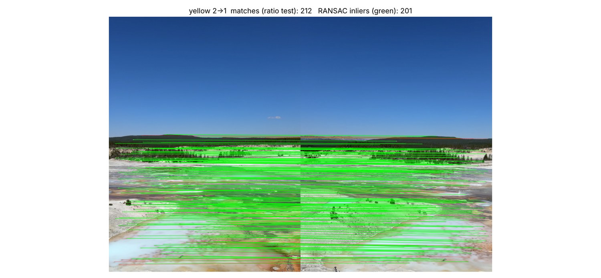
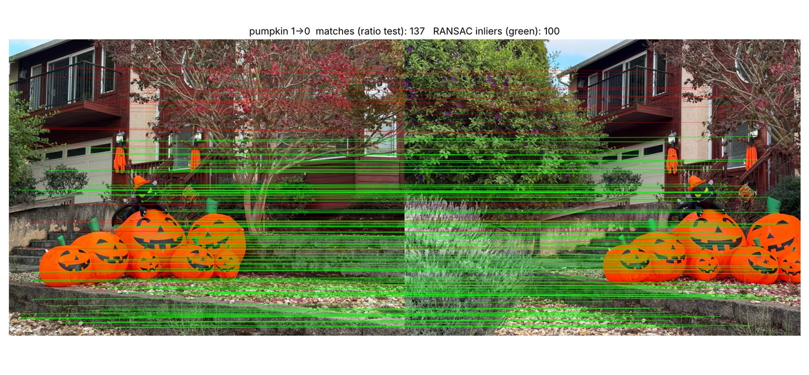
Most matches are correct. The wrong ones (red) are mostly in the sky and on the flat green court, where there is almost no texture. For the tennis pairs, most of the correct matches are on the trees and bushes behind the courts, and only a few are on the court lines and nets.
Even after the ratio test, some matches are wrong, and least squares is very sensitive to even a few wrong points. So I use RANSAC.
Repeat 3000 times: pick 4 random matches (skip the sample if three points are almost on one line), compute H from them exactly, count the matches whose transformed point is within
3 px
of its partner (the inliers), and remember the best H. At the end I recompute H with least squares on
all
inliers of the best model. The final H uses the same
computeH
as in Part A, so all the warping and blending code is the same as before.
def ransac_homography(p1, p2, n_iter=3000, eps=3.0, seed=0):
r = np.random.default_rng(seed)
n = len(p1); best = np.zeros(n, bool)
for _ in range(n_iter):
idx = r.choice(n, 4, replace=False)
if not _nondegenerate(p1[idx]): continue # 3 collinear points -> bad sample
H = computeH(p1[idx], p2[idx])
err = np.linalg.norm(apply_H(H, p1) - p2, axis=1)
inl = err < eps
if inl.sum() > best.sum(): best = inl
H = computeH(p1[best], p2[best]) # final least squares on all inliers
return H, (np.linalg.norm(apply_H(H, p1) - p2, axis=1) < eps)| Pair | Ratio-test matches | RANSAC inliers | Mean inlier error |
|---|---|---|---|
| Yellowstone, left → middle | 227 | 215 | 1.00 px |
| Yellowstone, right → middle | 212 | 201 | 1.04 px |
| Tennis, left → middle | 131 | 117 | 1.09 px |
| Tennis, right → middle | 109 | 89 | 1.24 px |
| Pumpkins, right → left | 137 | 100 | 1.30 px |
Left: my manual mosaic from Part A (hand-clicked points, two-band blend). Right: the automatic mosaic (Harris + ANMS + descriptors + ratio test + RANSAC, same warping and the same two-band blend). Nothing was clicked for the right column.
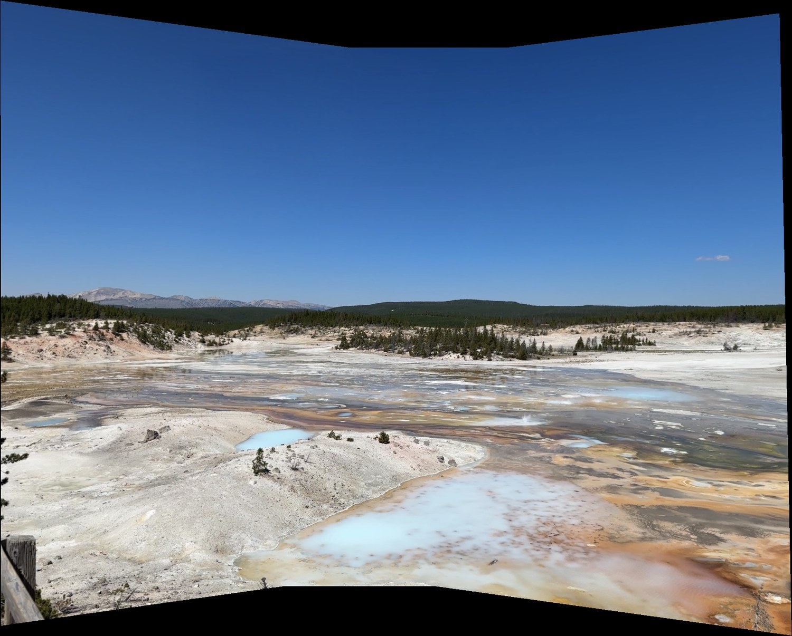
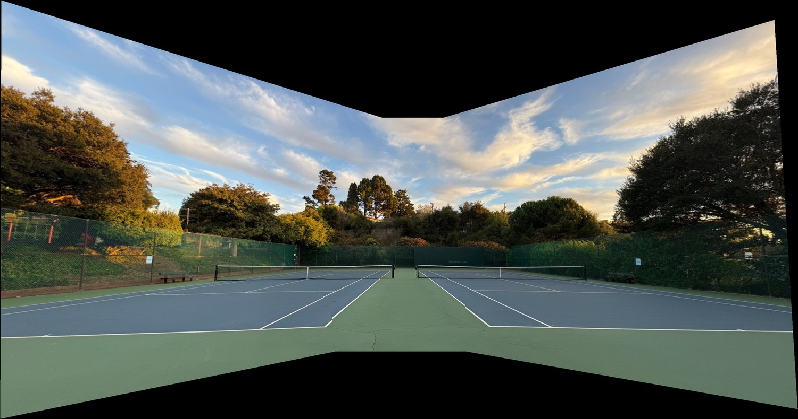
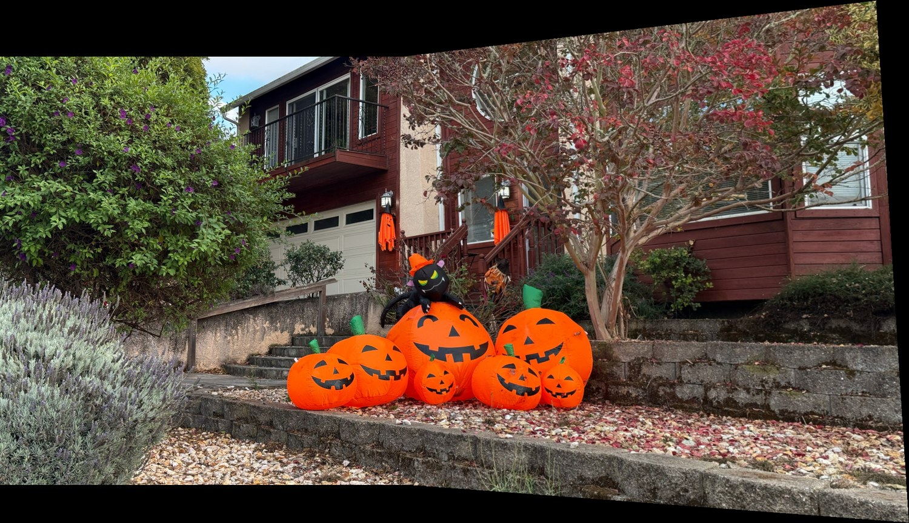
The pumpkin mosaics are almost identical. For Yellowstone the automatic result is clearly better: the far mountain ridge is a single sharp ridge, while in my manual mosaic it is doubled and blurry, and the manual mosaic also has a small step at the top left where the left photo is shifted up. The reason is that RANSAC uses 200+ inliers spread over the whole photo including the distant tree line and the horizon, while my 10 clicked points were mostly on the terrace in the lower part, so the horizon was not constrained. For the tennis courts the two mosaics are similar (both are stretched the same way at the sides); the automatic one has slightly smaller misalignments in the trees. The numbers in the table are not directly comparable with the manual reprojection errors from Part A (2–3 px), because RANSAC only measures the error on the matches it accepted (inliers within 3 px).
The big advantage of the automatic version is that it needs no clicking, and it is also more accurate because it uses hundreds of matches. A disadvantage is that most of the matches in a scene like the tennis courts are on far-away trees, so the result depends on what the features happen to cover.
Instead of telling the program which photos belong together and in what order, I give it an unordered pile of 10 photos and let it figure that out.
I shuffled 10 photos (3 tennis, 3 Yellowstone, 2 pumpkin, and 2 unrelated photos, the bear poster and the Taipei 101 canvas). For every ordered pair of photos I run the whole matching + RANSAC pipeline and record the number of ratio-test matches nₘ and RANSAC inliers nᵢ. Following Brown et al., a pair is declared to overlap if nᵢ > 5.9 + 0.22·nₘ (in both directions). The photos that are linked this way form a graph, and each connected component is one panorama .
To stitch a group, I pick the image with the most inliers as the reference, then grow a maximum spanning tree from it: at each step I add the neighbor with the strongest connection (most inliers), and compose the homographies along the tree. A single photo with no link (the unrelated ones) is reported as “not part of any panorama”.
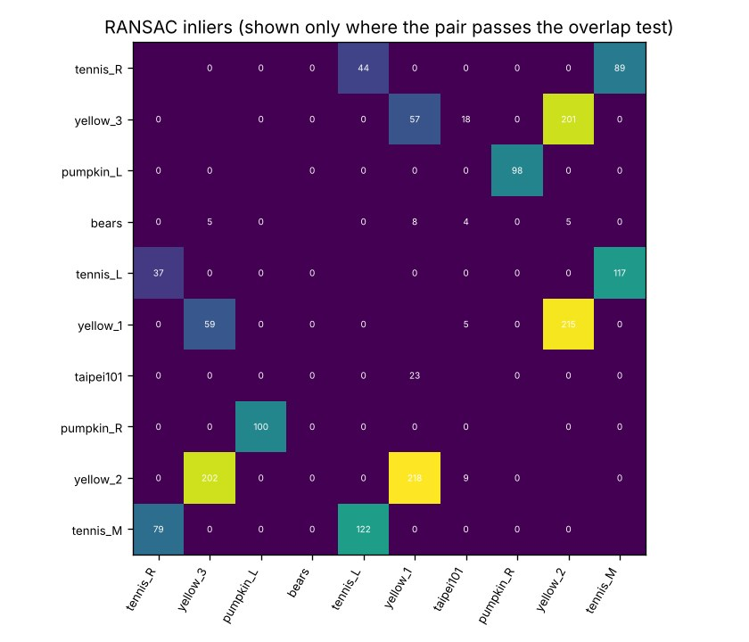
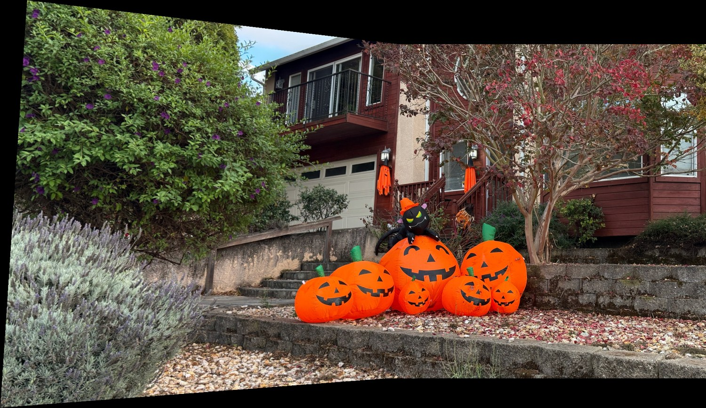
The program found exactly 3 groups with the correct members, and it correctly left the bear poster and Taipei 101 out (they have at most 23 inliers with any other photo, below the threshold). It also chose the middle photo as the reference for the tennis and Yellowstone sets by itself, because that photo has the most inliers.
There was one interesting problem. The two tennis courts look alike , so the left and the right tennis photos also match each other (44 and 37 inliers) with a wrong homography. The first time, my code walked through that bad link, the mosaic canvas exploded in size, and the program ran out of memory. Growing the tree with the strongest links first fixed it: the left–middle (117 and 122 inliers) and right–middle (89 and 79) links are used, and the weak left–right link is ignored. A weaker version of this happens for yellow_1 and yellow_3 (about 57 inliers), which only share a bit of the far horizon.
The part that took the most time was not the math but choosing good points: spread out, on static objects, and clicked accurately. Inverse warping with bilinear interpolation gives clean results, and the blending method matters a lot: two-band blending removed most of the ghosting that feathering left behind. The most surprising thing was how much a cylindrical projection helps for a wide scene, and how a tiny rotation in the camera (not a pure pan) can ruin a translation-only alignment. In Part B I learned that automatic matching works well when the features are spread over the image (ANMS helps a lot), that RANSAC makes the homography robust against wrong matches, and that a repeated structure (two identical tennis courts) can fool the matcher, so a recognition system should not trust every link equally.